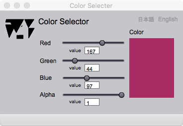

Color selector
カラー選択
Introduction
このページは，スライダーや入力欄でRGBの各原色の明度 (0-255) 及び，透明度 (0-100) を指定して，加色混合の色をつくるためにある．地図を作成するときの色の使い方については，Carographer で紹介した本などを参考にするといいでしょう．
Color selector

図１．RGBのいろの明度及び，透明度を指定して色を選択するページ
FIELDS
value (Red) (editable)
赤の明度を数字 (0 - 255) で指定する．
value (Green) (editable)
緑の明度を数字 (0 - 255)で指定する．
value (Blue) (editable)
青の明度を数字 (0 - 255)で指定する．
value (Alpha) (editable)
透明度を数字 (0 - 100)で指定する．数が小さいほど透明度は増加する．
Color
指定した色のサンプルが表示される．
BUTTONS
Red
赤の明度をスライダーを動かして指定する．
Green
緑の明度をスライダーを動かして指定する．
Blue
青の明度をスライダーを動かして指定する．
Alpha
透明度をスライダーを動かして指定する．
日本語
今あなたが読んでいるドキュメントが表示されます．
English
You can read the tutorial written in English.